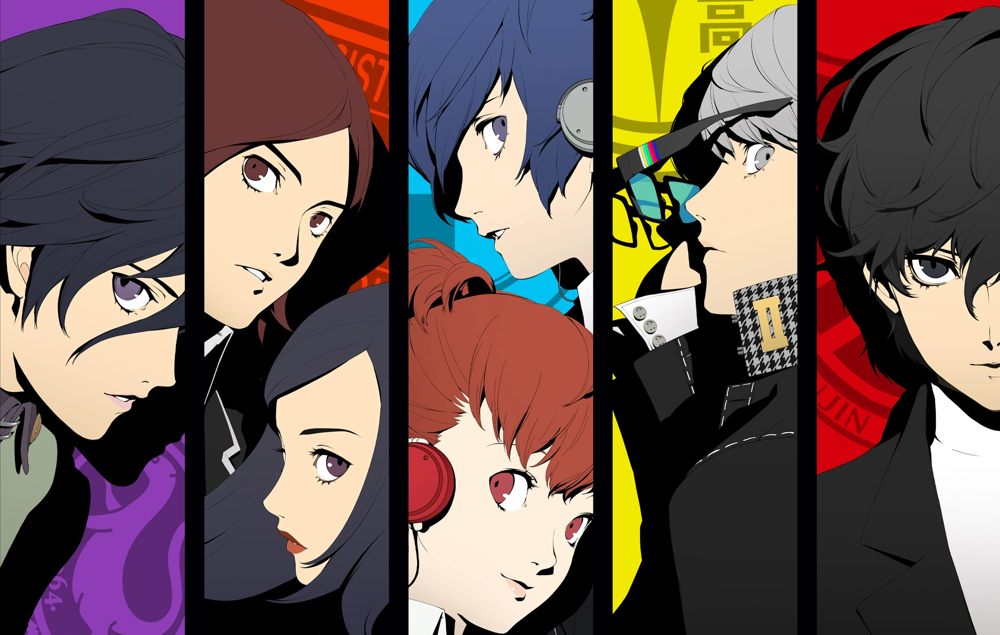

Persona é uma série de jogos spin-off da série Megami Tensei, que começou com o jogo Megami Ibunroku Persona em 1996. A série tem grande influência na psicologia analítica de Carl Jung, e alguns personagens e temas abordados tem base nisso.
A principal diferença entre Persona e Shin Megami Tensei, é que ao invés de Demônios, existem Personas e Shadows.
Uma Persona é uma manifestação do seu eu verdadeiro, uma “máscara” para enfrentar suas dificuldades (persona em latim significa máscara). Nos Persona 1 e 2, todos os personagens podiam carregar múltiplos Persona, mas a partir de Persona 3, apenas o protagonista possui essa habilidade, chamada Coringa (Wildcard).
Na psicologia de Jung, a Persona é a máscara que as pessoas usam para exercer diferentes papéis na sociedade, e explicam porque as pessoas agem de formas diferentes em diferentes situações. Cada pessoa carrega múltiplas Personas.
As Shadows (Sombras) são monstros nascidos das mentes humanas, que carregam emoções humanas (geralmente negativas), e predam os humanos. São manifestações dos sentimentos mais profundos e obscuros. É revelado que, quando o seu “ego” consegue controlar e aceitar sua Shadow, é quando se adquire a sua Persona.
Na psicologia de Jung, a Shadow é a imagem do que a pessoa não é, e não deseja ser, mas que não deve ser rejeitada, e sim aceita como apenas um aspecto de si. A Shadow emerge quando a pessoa perde a habilidade de diferenciar sua Persona de si mesmo.